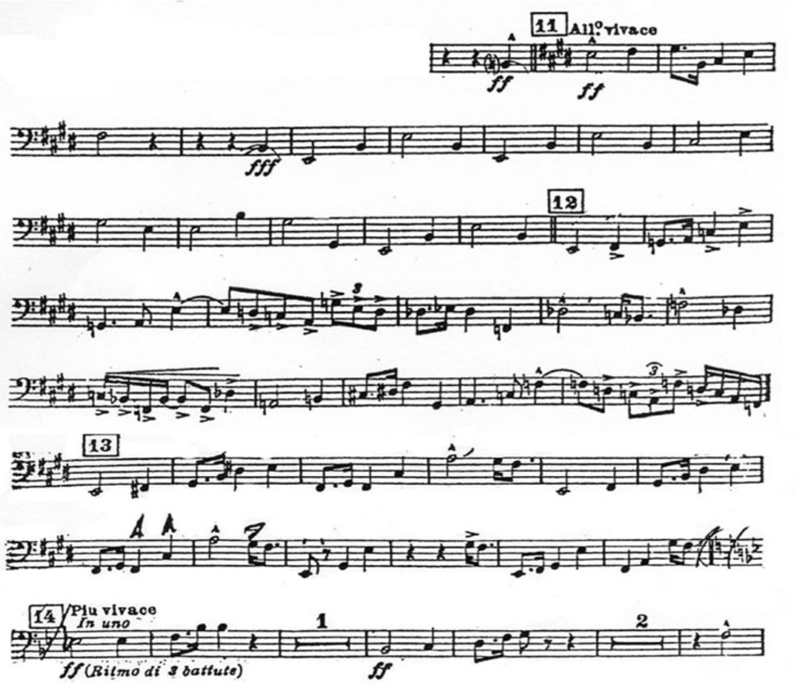
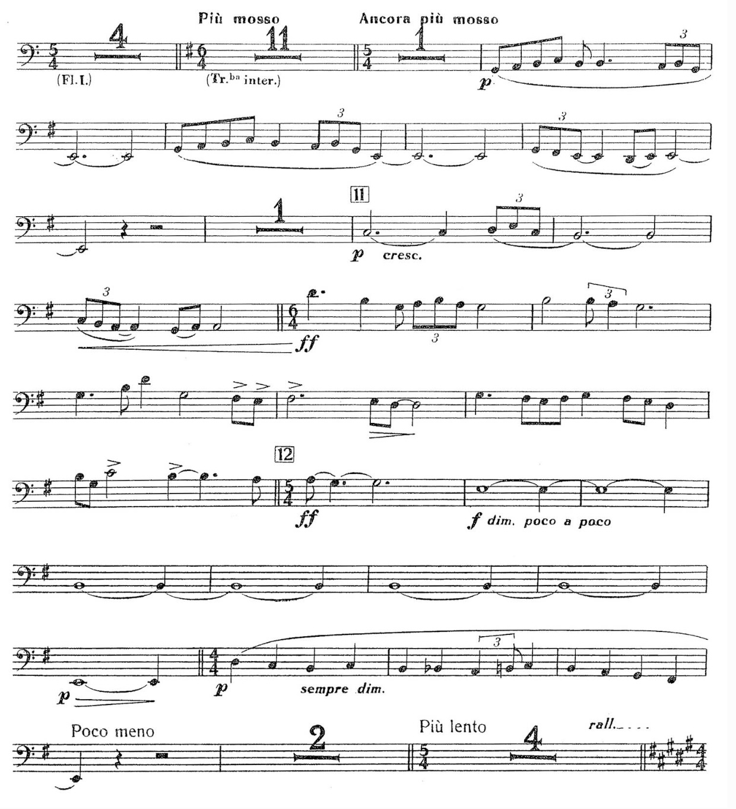
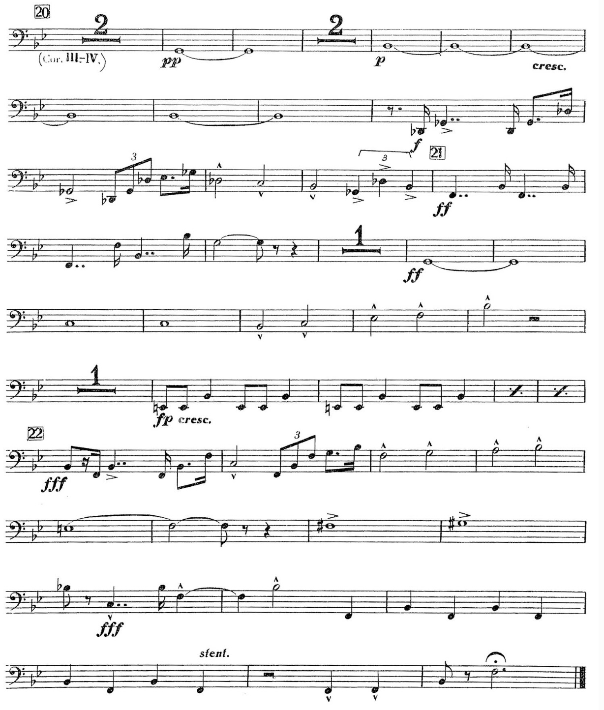

Respighi - Fountains of Rome
Advice
This is one of the most challenging excerpts for bass trombone because of the combination of volume, style, and multiple-tonguing required to play it well. It's also really fun to play- try playing with a tuba friend if you have the chance! Listen to all recordings on repeat until you get the correct idea in your head. I like to listen to full low brass section recordings the most for this purpose. Notes should be full value and longer than you think to fit the orchestral style. You will need to know how to double/triple tongue to play some parts of this. I recommend recording yourself and listening back to find areas for improvement.
Resources
Full Piece Recording - New York Philharmonic
Bass Trombone & Tuba - Mike Szabo
Low Brass Section Recording - New York Philharmonic Low Brass at STS
Low Brass Section Recording - Atlanta Symphony Low Brass
Bass Trombone Only Recording - Christian Jones
Respighi - Pines of Rome
Excerpt 1
Excerpt 2
Advice
This is a great excerpt to play/perform. Make sure to listen to recordings for the full piece to know how this should sound dynamically and stylistically. Learning how to gain the control to play loudly with a full sound and good tone is a process that requires lots of practice.